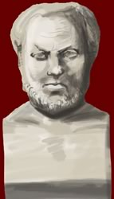

Thucydides
c.460 - c.395 BC

Thucydides was an Athenian. With the outbreak of the Peloponnesian War, Thucydides became a general in the Athenian navy. During this time he began writing his History of the Peloponnesian War. It details the events of the war, speeches made by the important people of the day and the effect that the outbreak of the plague had on Athens.
|